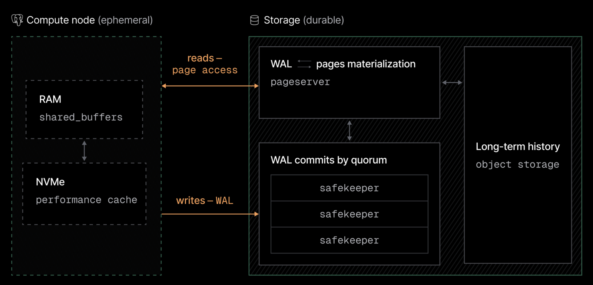

Make your Postgres
agent-ready
Branching, isolation, and safer shipping
Programming now runs
at agent speed.
Bun, rewritten from Zig to Rust
Agents are solving math
Ten long-standing open problems resolved or advanced, including Erdős problems 183, 146 and 180
All ten formalized as Lean proofs · about $2k in tokens for all ten
Riemann zeta zeros proven to lie on the critical line: from 41.6% to 67.2%
About 60 subagents, thousands of numerical checks, one Lean 4 proof
Smart models. And an oracle.
Agents get things wrong. A lot.
650 ideas, none worked
Claude's first attempt, before the run that found the new bound
Restarts lost the work
"He had to do some restarts when Claude stopped on random errors; then some of the previous search results were lost."
What now?

For operational systems,
the oracle is production.
Instant
A copy of production per attempt, a thousand at once
Isolated
Nothing an agent does touches the real thing
Recoverable
Every mistake has an undo
Infra has to run at agent speed. Today: the database.
Postgres on the lakebase architecture

One branch per agent loop
Any point in history is a restore point
Neon Postgres
+ your Copilot
Every feature gets its own copy of production. The agent only reports done once it has proven the change on that copy.
## Dev loop: database changes Every feature that touches the database: 1. Create a Neon branch for the feature neon checkout feat/addons --create 2. Pull the branch's environment variables neon env pull 3. Run the app against that branch 4. Make the migration and run it on the branch 5. Verify the feature end to end on the branch 6. Diff the schema: production vs. this branch neon branches schema-diff main feat/addons 7. Only then report the implementation as done
Neon + your
GitHub Actions
Every pull request gets a preview of the whole stack.
Vercel preview deployment
Neon branch: Lakebase Postgres, Auth, Functions
on: pull_request steps: - name: Create Neon preview branch run: neon checkout preview/pr-$PR --create - name: Run Drizzle migration on the preview branch run: npx drizzle-kit migrate - name: Post schema diff uses: neondatabase/schema-diff-action@v1.0.1 - name: Deploy web preview to Vercel run: node scripts/vercel-deploy.mjs … - name: Comment preview URL
Copilot CLI + a branch
of production
Repo: AGENTS.md database rules and Neon skills
Agent branches, migrates, verifies against real data, retries
Merge: backup branch, then production
Destructive change, then restore
Agents ship fast when they can check their work.
For operational systems, that check is production:
instant to copy, isolated, easy to roll back.
Infra has to run at agent speed.
Thank you
demo repo: TBD · @andrelandgraf